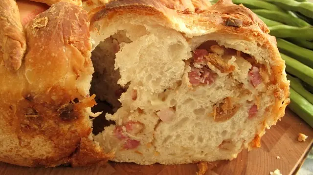

casatiello :D
ed è tradizione che oggi..il giorno prima di Pasqua a pranzo si mangi il casatiello napoletano o tortano..
una squisitezza napoletana.. x spezzare il digiuno da carne,di ieri, venerdì santo, ke è finita la quaresima, come a significare la morte di Gesù e quindi una penitenza x rispetto a lui noi cristiano nn mangiamo la carne e la mangiamo oggi spezzando questo sigillo con il casatiello che ha tutti i tipi di salumi all'interno..
